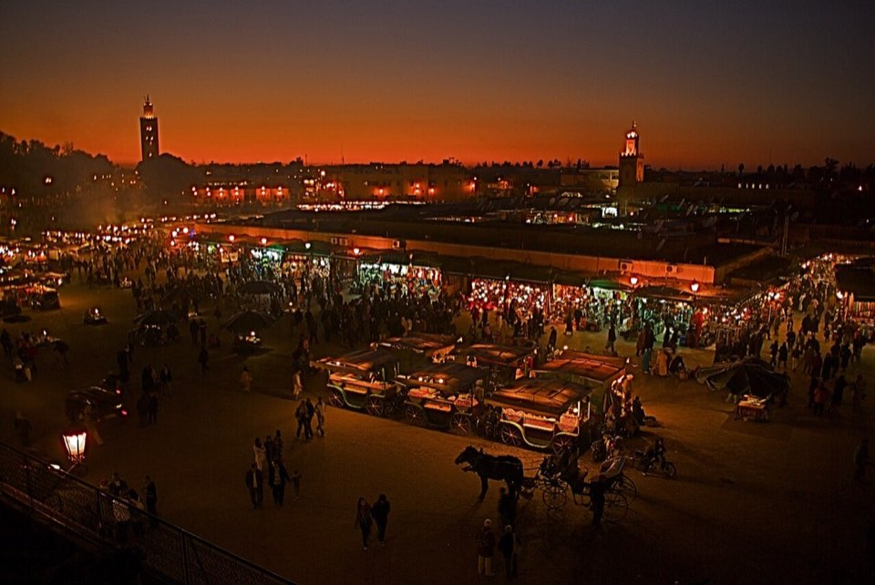

Helyek, közelség szerint
Ami egymás közelében van, az egy csoportban szerepel. Koppints egy helyre a részletekért, térképért, linkekért.

2026. november 14–18. · 4 fő · Riad Miel & Une Nuit, Kasbah
Ami egymás közelében van, az egy csoportban szerepel. Koppints egy helyre a részletekért, térképért, linkekért.